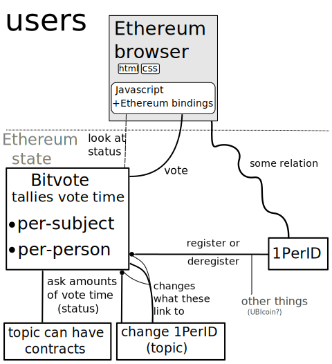

Bitvote

SOPA
SOPA blackout; not just Google and Wikipedia,
People had to promote it a lot to get there
Loudness of signal
essentially a vote by loudness. Largely it was ‘spamming’ (‘twitter storm’)
inefficient and not necessary proportional (astroturf)
can vehemence of belief/demands be presented by something less than ‘loudness’?
An Idea
What does the solution look like, functionally?
Everyone gets vote-time, i.e. one second per second
- need keep track of how much vote⋅time users have and subjects got.
- need one person per account.
If you care about a topic particularly, spend more vote-hours on it.
Topics cover any subject matter. Usually represented with a link. (random example)
- http://https://www.march-against-monsanto.com
What it looks like
… show interface(demo) …
Button
… show .. idea for button that goes onto a page …
Need for decentralization
Otherwise:
Single place to sue/threaten.
Requires trust towards the operators.
Just not cool.
Ethereum

interfaces from arbitrary pages are possible because of this
Ethereum contract diagram

Open problems
Scalability, because:
More people implies more voting weight
cant say ‘tough luck’ when contract excution too expensive
Ethereum working on it, some ideas that help.
One per ID. Ideas:
Do computer-hard things.
Synchronized computer-hard actions that the contract is somehow aware of.
Peak demand makes it harder to fool.
Reputation system-like approaches.
Note that this is something other things might also want; ‘UBI coin’ (‘socialcoin’)
Ethereum browser popularity
To summarize
Bitvote is a project to give people a voice.
Interface is internet-browsing-like, where the browser can read Ethereum state
Challenges:
- Large numbers of users ⇒ scalability
- One person per ID
Questions/Responses from the audience

Appendix: Scaling
It is listed ontop here github.com/ethereum/wiki/wiki/Problems, but it is more defining the problem that solving right now. (though that is a good first step!)
Aggegrated signatures. (reddit.com/r/crypto/comments/291hzz/aggregate_signatures/)
Basically you have a secret and a public part in public key cryptography.
Signatures are data resulting from a program and the private key that indicates that a person signed it.
You can encrypt towards another public key. So the other guy can use his private key to open it, he can then also figure the sender public key.
Simplest aggegrate signing would to have a ‘public secret’ and repeatedly encrypting the same message. (not 100% sure that doesnt increase the size, believe so)
Hanging blocks. It increases space a lot, but it has achillies heel in data availability. The current approach solves it with votes, so aggegrate signatures matter to it!
Treechains are interesting, havent gotten it well. (but would expect to hear more if it worked..)
mail-archive.com/bitcoin-development@lists.sourceforge.net/msg04388.html
“Disentangling Crypto-Coin Mining: Timestamping, Proof-of-Publication, and Validation” that links to is interesting. (hanging blocks fails basically completely on proof-of-publication)
mail-archive.com/bitcoin-development%40lists.sourceforge.net/msg03307.html
Some other that i could easily have missed.
/